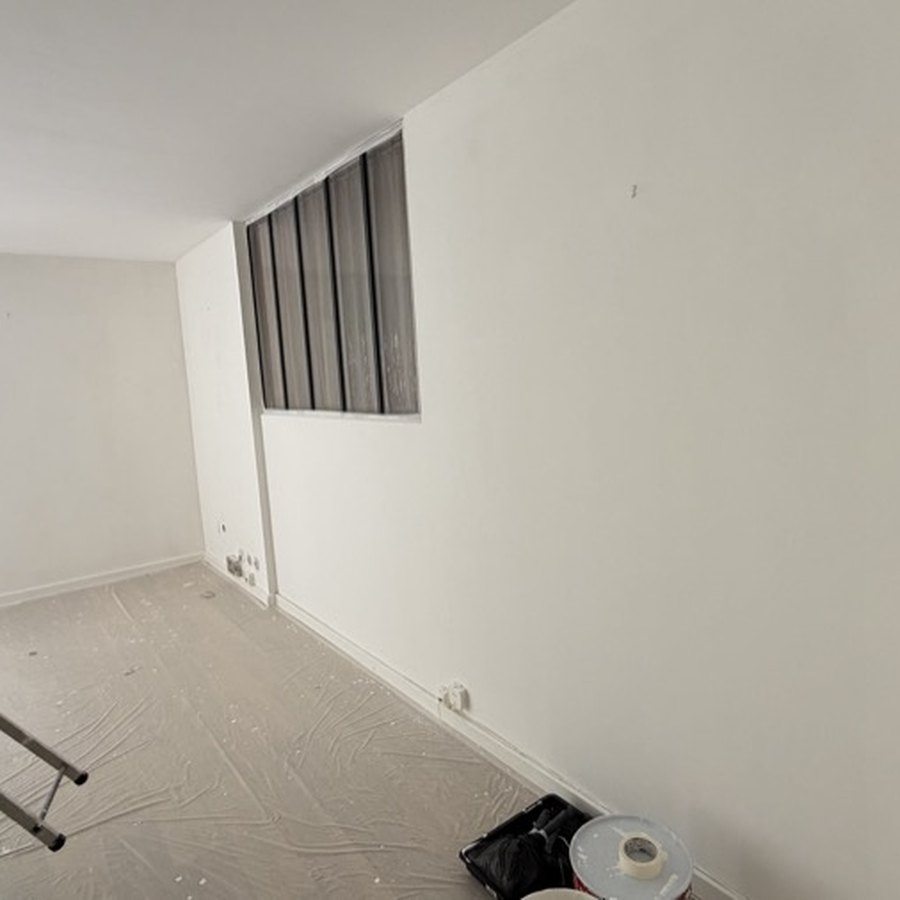

Remise en peinture d’un local avant restitution : ce qui se voit
Une reprise réussie se reconnaît à ce qu’on ne la voit pas. Et la raison pour laquelle une retouche se voit n’est presque jamais la couleur.

Pourquoi une retouche localisée ressort
Même avec le pot d’origine, une retouche se repère. Trois raisons se cumulent : la peinture en place a vieilli et légèrement jauni, elle a été appliquée au rouleau dans un sens donné qui a laissé une texture, et une reprise fraîche n’a pas le même niveau de brillance qu’une surface lessivée plusieurs fois.
C’est ce dernier point qui trahit le plus souvent une retouche : sous un éclairage de bureau rasant, ou à la lumière d’une baie vitrée, la différence de brillance dessine nettement le contour de la zone reprise, alors que la couleur est identique.
La règle du pan entier
D’où la règle que nous appliquons : on ne reprend pas une zone, on reprend une surface délimitée par des angles. Un pan de mur entier, d’un angle à l’autre, du sol au plafond. L’œil accepte une légère différence entre deux pans séparés par un angle ; il ne l’accepte pas au milieu d’un mur plat, et un état des lieux de sortie encore moins.
- Trous de chevilles, de goulottes et de fixations d’écrans : rebouchage, ponçage, puis reprise du pan
- Traces de frottement derrière les bureaux et les caissons : reprise du pan concerné
- Plafond jauni par une ancienne cuisine ou une salle de pause : impression bloquante avant peinture
- Auréole d’infiltration : traiter la cause, sinon elle réapparaît en quelques semaines
- Angle épaufré par un passage de chariot : reconstitution avant toute mise en peinture
Ce que cela change pour la restitution
Un local dont les murs sont repris au pan entier passe l’état des lieux de sortie sans discussion. Un local constellé de retouches visibles ouvre une négociation, et la retenue sur dépôt de garantie dépasse souvent le coût de la reprise correcte.
C’est la raison pour laquelle nous chiffrons toujours au pan, et pourquoi nous indiquons dans le devis les surfaces concernées : vous savez exactement ce qui est repris et ce qui ne l’est pas, et votre bailleur aussi.
Un chantier à faire livrer ou un logement à rendre ?
Envoyez-nous des photos par SMS, nous vous répondons avec une estimation sous 24 h ouvrées.